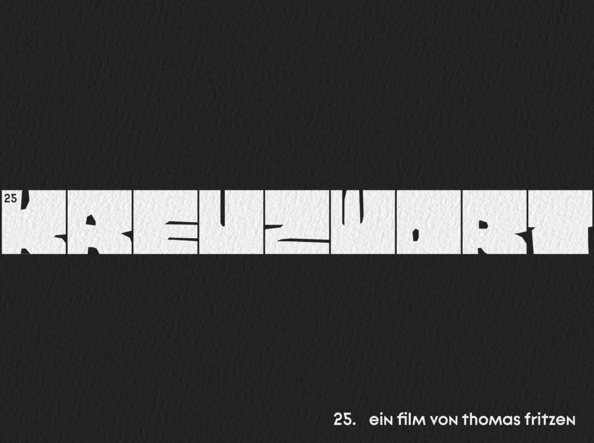
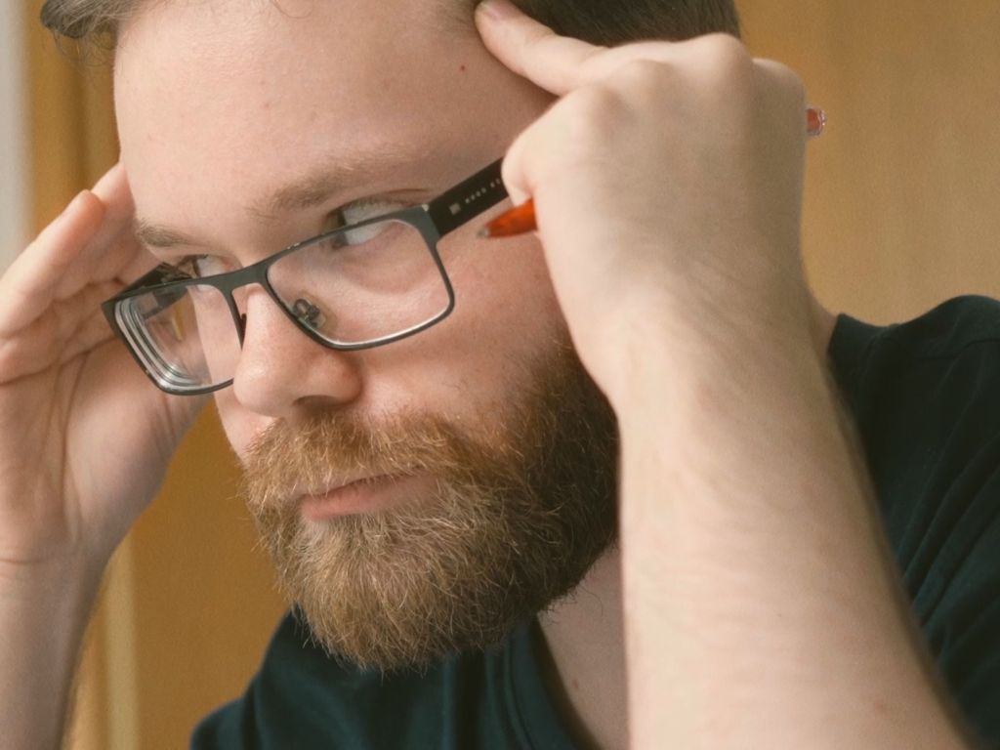
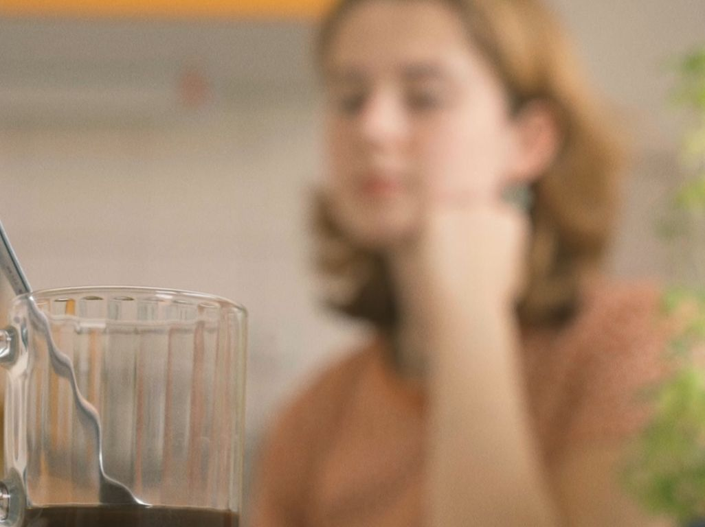
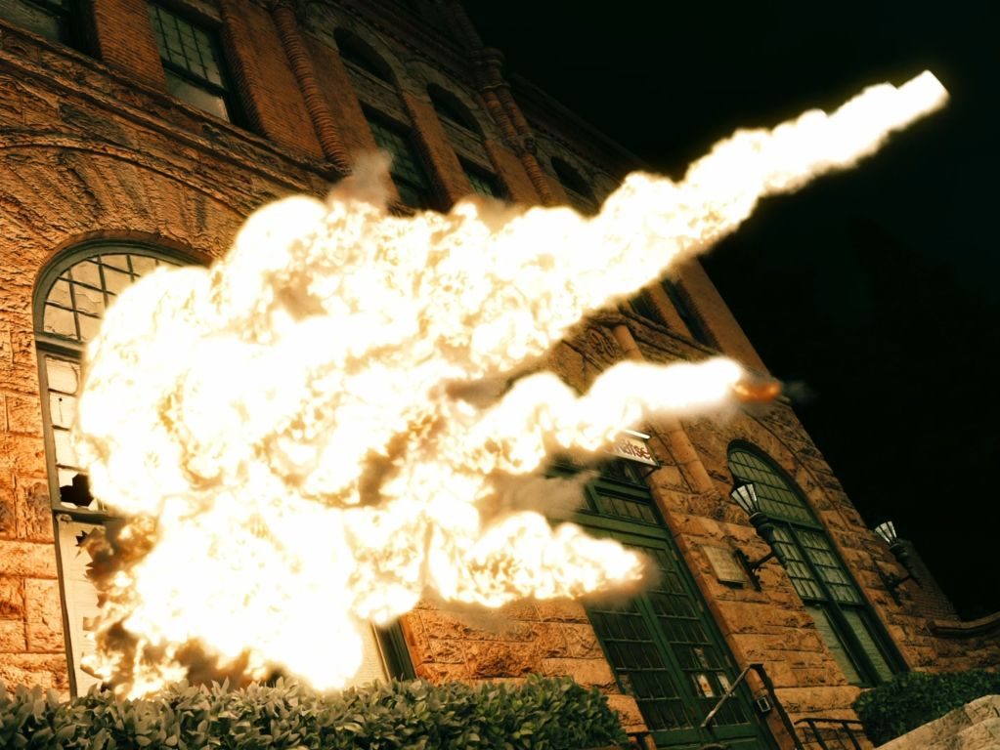
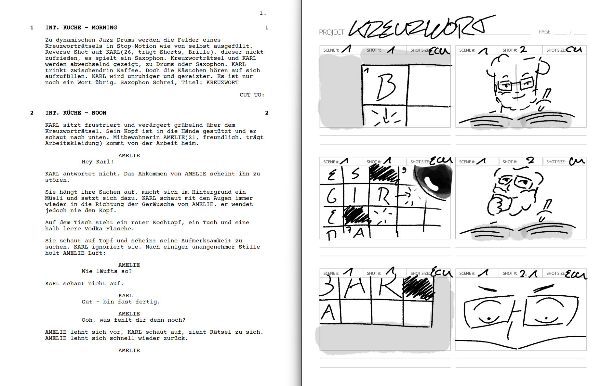
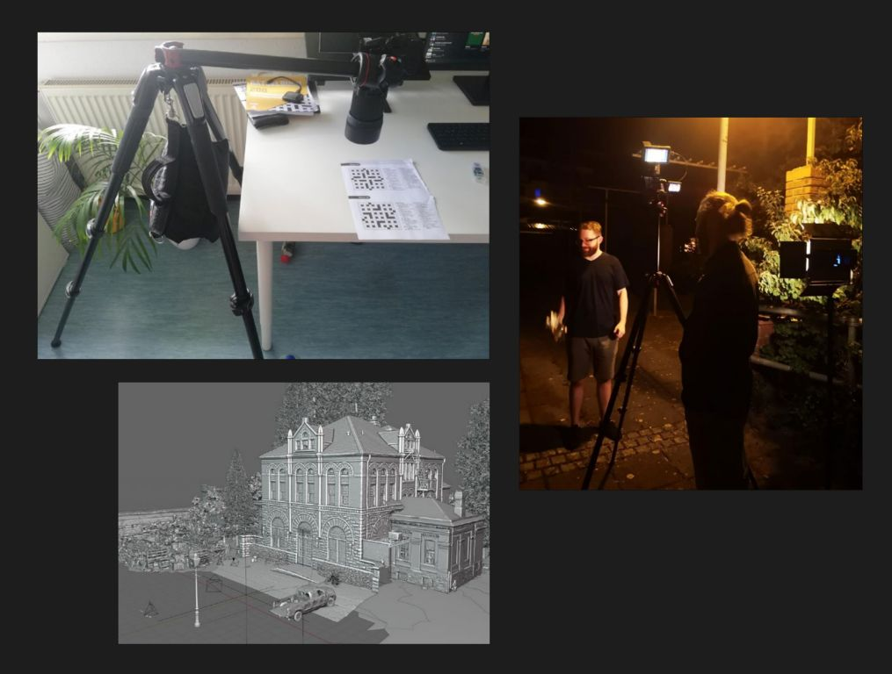

Short film project at Harz University of Applied Sciences. Logline: A man who tends to leave things unfinished becomes obsessed with finding the last word of a crossword puzzle in order to prove to himself and others that he can complete things. When he fails to find the word, he resorts to other measures to put an end to the matter. I wanted to create a film that (over)dramatizes a seemingly everyday situation, both in terms of story and visual design. The focus is on the character and their traits and behavior. Through this project I gained experience in all phases of production: from screenwriting, storyboarding, and planning to camera work, directing, and post-production. Due to licensing reasons, I have not uploaded the finished short film online, but I am happy to send it to you.
2024
DaVinci Resolve, Blender
Cast: Junia Bär, Malte Lennicke Camera: Lennart Hesse Sound: Ronja Passauer, Renée Mühlmeyer Direction, Screenplay, Editing, VFX: Thomas Fritzen
Short film project at Harz University of Applied Sciences. Logline: A man who tends to leave things unfinished becomes obsessed with finding the last word of a crossword puzzle in order to prove to himself and others that he can complete things. When he fails to find the word, he resorts to other measures to put an end to the matter. I wanted to create a film that (over)dramatizes a seemingly everyday situation, both in terms of story and visual design. The focus is on the character and their traits and behavior. Through this project I gained experience in all phases of production: from screenwriting, storyboarding, and planning to camera work, directing, and post-production. Due to licensing reasons, I have not uploaded the finished short film online, but I am happy to send it to you.

Title card KREUZWORT.

A frustrated Karl, triggered by the crossword puzzle, reacts to the unexpected arrival and upcoming confrontation with his roommate Amelie.

Amelie looks at an almost empty cup of coffee.

The climax with the crossword publisher Venice.

Side-by-side script and storyboard. I also created a detailed shot plan, as only one shooting day was available.

Behind-the-scenes images. Photo setup for the intro sequence, night shoot, and building the 3D scene in Blender.